Sistemas que já projetei e construí
Os sistemas a seguir foram desenvolvidos no âmbito da universidade: projetos institucionais em parceria com empresas privadas e órgãos públicos, e provas de conceito e protótipos criados para apoiar projetos de pesquisa, extensão e ensino. Como muitos deles não têm acesso público, mostro aqui como funcionam — com telas ou ilustrações e o diagrama de cada um.
PLANTIA
Do pedido em texto ao layout 3D de uma planta agroindustrial, pronto para o SketchUp, com inteligência artificial.
Ver o caso → 02CogniFox
Transforma dados espalhados em painéis interativos, com aprovação e apoio de inteligência artificial.
Ver o caso → 03Patas UFLA
Rede colaborativa que ajuda animais perdidos a reencontrarem seus tutores, com apoio de inteligência artificial.
Ver o caso → 04GeoProcess
Consulta de dados geográficos com mapas, gráficos e alertas, sem precisar ser especialista.
Ver o caso → 05Atena
Ensino de programação em que cada aluno segue seu próprio caminho, com correção na hora.
Ver o caso → 06 · PesquisaCasa Assistiva
Casa inteligente para pessoas com deficiência e idosos, controlada por toque, blocos, gestos, voz ou pensamento.
Ver o caso → 07 · PesquisaBoi Feliz
Coleiras com sensores e inteligência artificial que reconhecem o comportamento do gado em tempo real.
Ver o caso → 08 · PesquisaRedes Veiculares
Carros que avisam uns aos outros sobre acidentes, sem internet, testados nas ruas de Lavras.
Ver o caso →Otimização Generativa de Arranjos Físicos 3D para Agroindústrias via Inteligência Artificial Híbrida
Prova de conceito para quem projeta plantas industriais do agronegócio. Hoje, montar o layout preliminar de uma proposta comercial é trabalho manual, lento e cheio de retrabalho. Aqui, o cliente descreve a demanda em texto — por exemplo, “preciso processar 250 kg de farinha por hora” —, a inteligência artificial transforma o pedido numa especificação, o sistema calcula quantos equipamentos são necessários e encontra sozinho uma posição para cada um, já conectados entre si, gerando o modelo pronto para o SketchUp. A POC mostrou que o mecanismo funciona de ponta a ponta e virou a base técnica de uma proposta de pesquisa e desenvolvimento em parceria com a UFLA. Concebi e desenvolvi a prova de conceito, chamada Pré-SketchUp.
Para a sua startup: mostra o caminho completo que uma startup percorre: da ideia a uma prova de conceito funcionando e, dela, a um documento técnico pronto para buscar financiamento.
Veja a versão resumida do documento para edital →
Situação
- Prova de conceito concluídaMecanismo validado de ponta a ponta, em cenários variados
- Próxima etapaProjeto de P&D estruturado em parceria com a UFLA, com roteiro para chegar a produto e pronto para editais de fomento
- DomínioPlantas de processamento agroindustrial
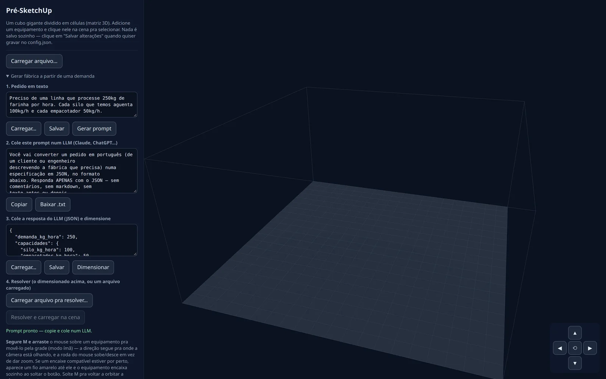
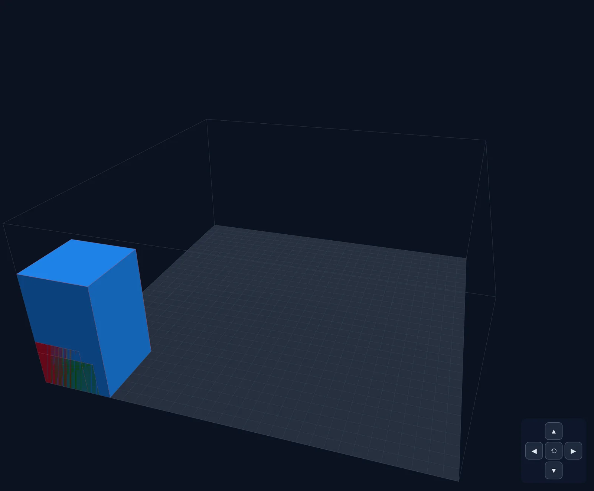
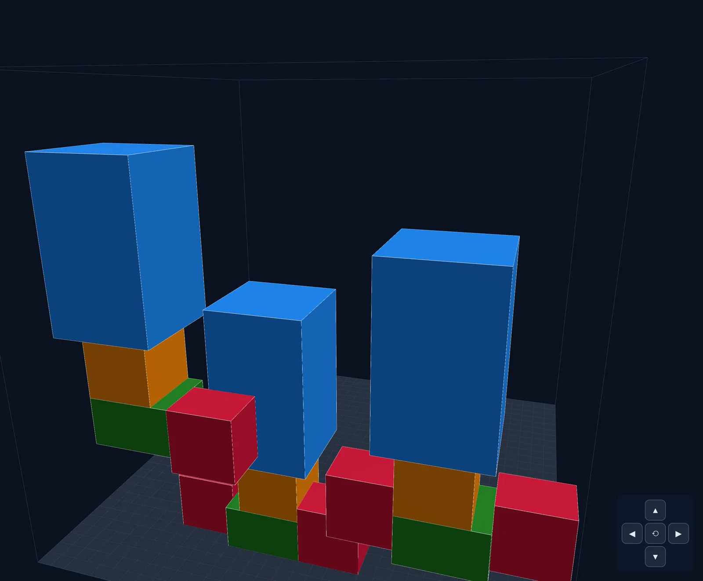
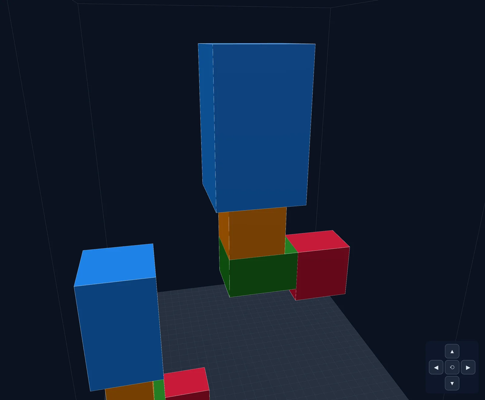
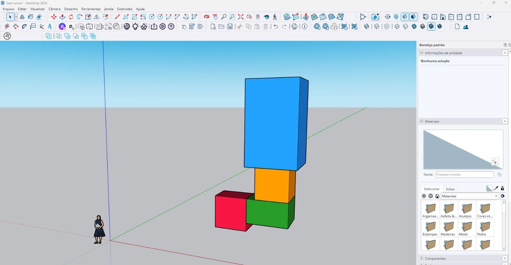
Como funciona
Passe o mouse para pausar · clique numa etapa do diagrama para ver a tela correspondente.
Arquitetura
A POC é um pipeline em Python com etapas desacopladas, cada uma lendo e escrevendo JSON. O pedido gera um prompt estruturado para um LLM, que devolve apenas a especificação — o modelo não faz nenhum cálculo. O dimensionamento é determinístico: regras de capacidade definem quantas linhas e quantos silos, moedores, peneiradores e empacotadores a demanda exige. A fábrica é modelada como uma matriz 3D discreta de células; cada equipamento ocupa um bloco de células conforme suas dimensões e declara entradas e saídas tipadas em faces específicas, como peças de Lego — mesmo tipo em faces opostas significa conexão compatível.
O posicionamento é resolvido com o CP-SAT do Google OR-Tools: variáveis de célula e de rotação (0°, 90°, 180°, 270°) para cada equipamento, restrições de não sobreposição, de limites do terreno e de conectividade obrigatória de cada porta a uma porta compatível de outro equipamento; quando não existe arranjo possível, o solver prova a inviabilidade. Nesta versão o objetivo é só viabilidade — minimizar área, distâncias e custo fica para a próxima etapa. A interface web em Three.js permite revisar e ajustar o layout com encaixe magnético e validação de portas, e exportadores geram um script Ruby para a API do SketchUp e um arquivo STL.
Da fonte ao painel, com versionamento e IA sob controle
Ferramenta para transformar dados espalhados — bancos de dados, planilhas, arquivos de mapas — em painéis interativos que qualquer pessoa da equipe consegue consultar. Quem cuida dos dados conecta as origens e monta os indicadores; nada chega aos painéis sem revisão e aprovação, e todo o histórico de mudanças fica guardado. Um assistente com inteligência artificial ajuda a criar novos indicadores e painéis a partir de uma descrição em texto, sempre como proposta para alguém aprovar. Concebi e desenvolvi a plataforma, que mesmo ainda em desenvolvimento já está em produção no Atena.
Para a sua startup: mostra velocidade: da arquitetura a uma versão em uso real em poucos meses, com a inteligência artificial ajudando sem tirar o controle de quem decide.
Onde é utilizado
- AtenaEm produção — são os painéis que os professores usam para acompanhar o progresso dos alunos
- Versão 1.2 betaEm desenvolvimento ativo, já usada no dia a dia
- DemonstraçãoDados públicos de ocorrências de aves no Brasil (GBIF)
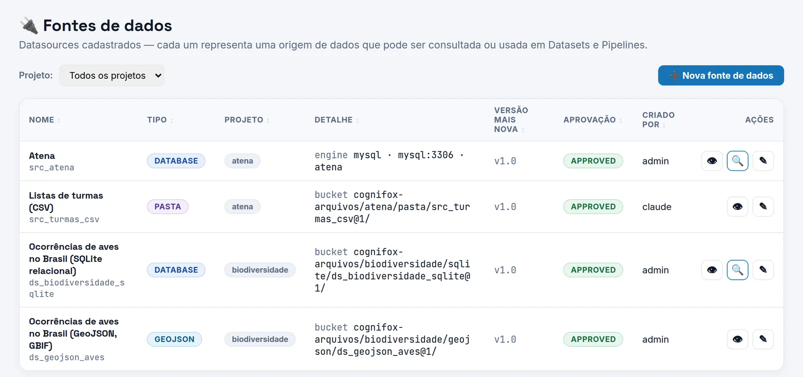
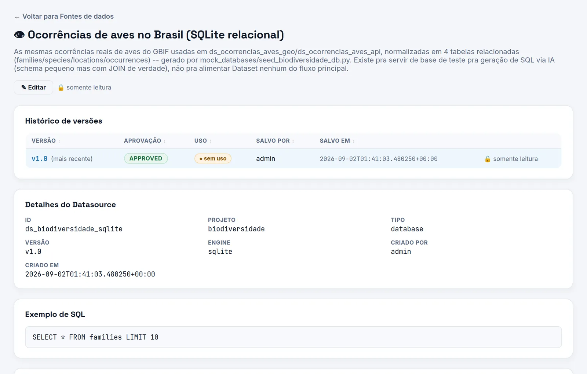
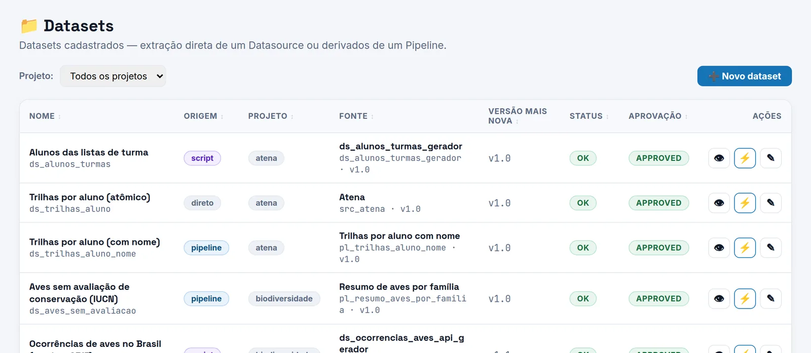
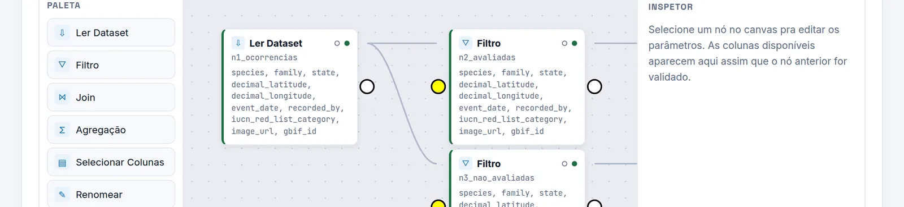
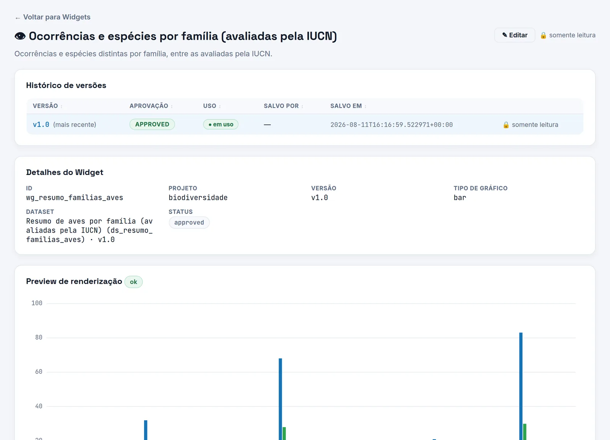
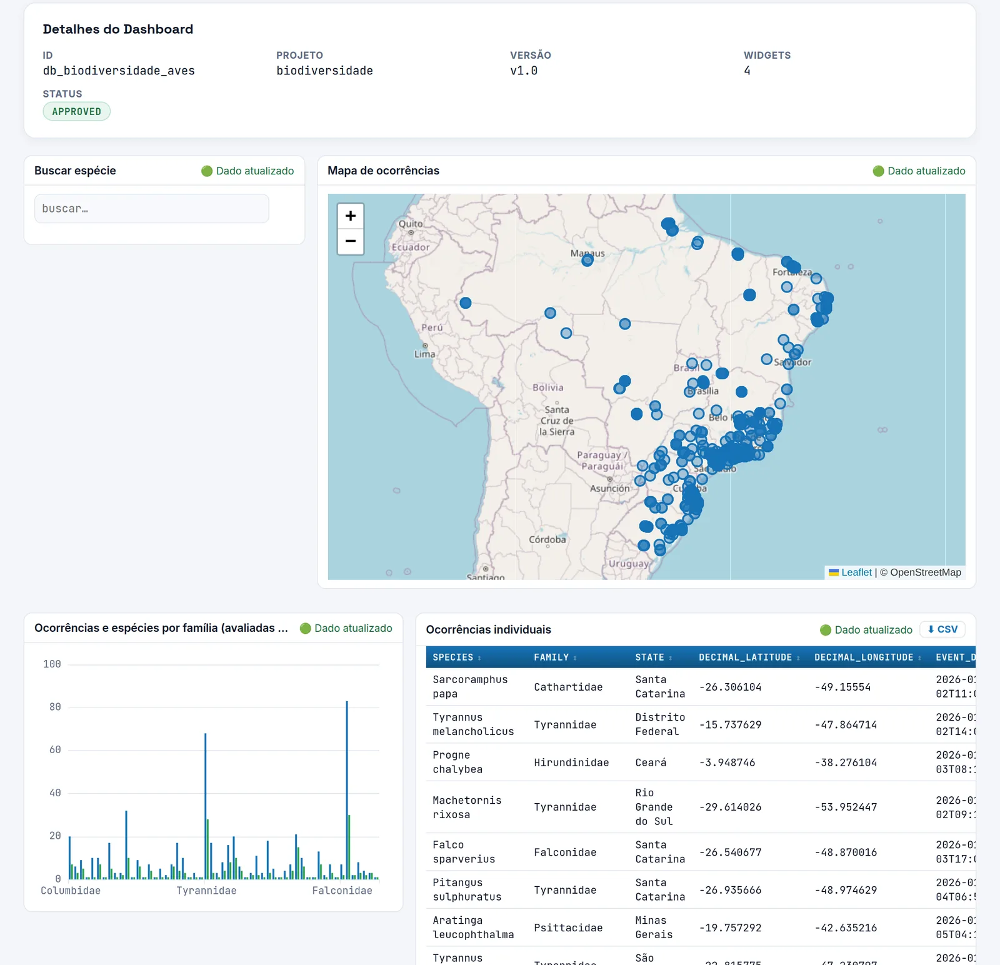
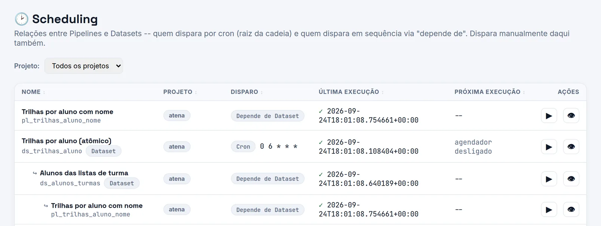
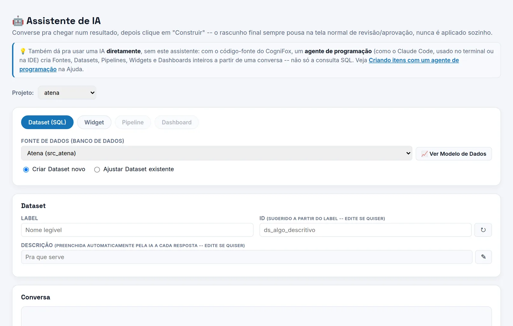
Como funciona
Passe o mouse para pausar · clique numa etapa do diagrama para ver a tela correspondente.
Arquitetura
O CogniFox separa motor e interface: todas as entidades são documentos JSON com contrato em Pydantic (validação estrutural) e regras de negócio em validadores próprios (validação semântica) — SQL restrito a leitura, paleta fechada de nós e detecção de ciclos por DFS, o mesmo algoritmo reaproveitado em pipelines, nos sinais entre widgets e na dependência entre pipelines. Pipelines são grafos executados pelo Ibis sobre DuckDB, com propagação estática de schema nó a nó, que alimenta o autocomplete do editor visual. Todo dataset é materializado, a versão anterior vira backup e o status de saúde (OK, BACKUP, FALHA) se propaga pela cadeia; um orquestrador infere a ordem de execução pela dependência de dados e o APScheduler dispara por cron.
A camada web é Flask, com projetos e arquivos no MinIO e fontes em MySQL, PostgreSQL, SQLite, CSV ou GeoJSON. Os dashboards usam Gridstack, ECharts e Leaflet, com sinais entre widgets que recalculam só o que foi afetado, e podem ser embutidos em outro sistema por um Web Component com Shadow DOM e tokens JWT escopados e revogáveis. O assistente de IA (LiteLLM, independente de provedor) gera entidades a partir do schema real da fonte; a resposta passa pelos mesmos validadores do editor visual e, se falhar, o erro exato volta ao modelo em até três tentativas — e o resultado entra sempre como rascunho, sujeito à mesma aprovação humana. Código customizado só entra como Script catalogado e aprovado, e pipelines podem ser cobertos por casos de teste em JSON, sem escrever Python.
Uma rede para ajudar animais perdidos a voltarem para casa
Rede colaborativa que conecta tutores, comunidade e voluntários na busca por animais perdidos. O tutor cadastra o animal com fotos e o local onde ele sumiu; qualquer pessoa pode relatar que viu ou recolheu um animal, pelo site ou pelo Telegram. A inteligência artificial descreve as fotos e aponta possíveis correspondências entre animais perdidos e avistamentos, e voluntários revisam cada etapa — inclusive confirmando por telefone quem diz estar com o animal antes de liberar o contato ao tutor. Os requisitos foram levantados com a população, clínicas veterinárias, pet shops e órgãos públicos. Concebido com outros três professores do departamento; projetei a arquitetura e implementei a plataforma.
Para a sua startup: mostra como pensar um produto completo, do usuário ao lançamento: inteligência artificial e pessoas trabalhando juntas, com segurança e divulgação incluídas.
Situação
- Projeto de extensão da UFLAPara atender Lavras e cidades vizinhas
- Versão 0.4 betaEm fase final de testes
- Código aberto (licença MIT)Outras cidades e grupos podem adaptar e usar
Projeto de extensão da UFLA — não é trabalho de consultoria.
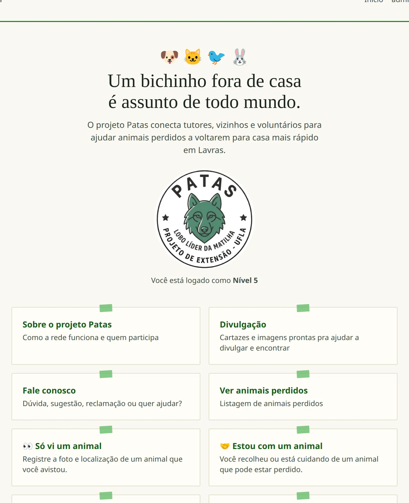
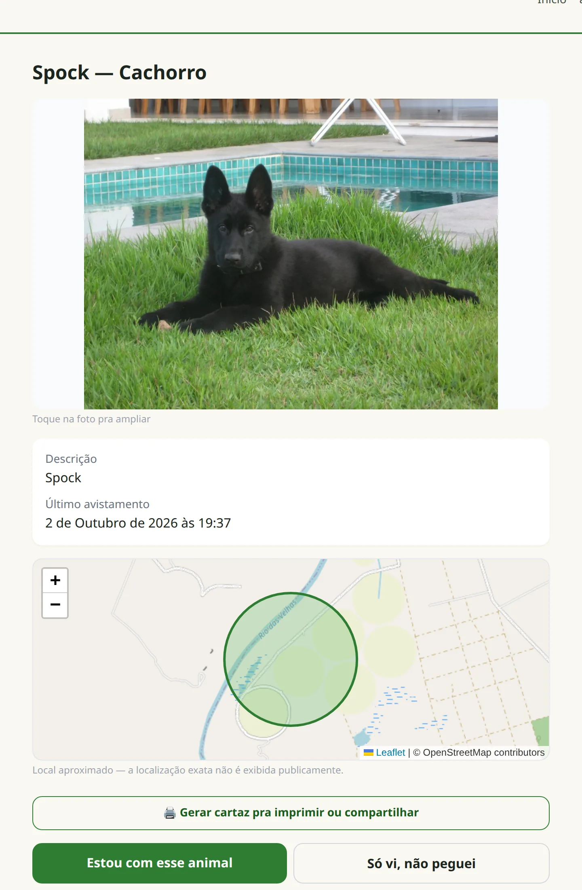
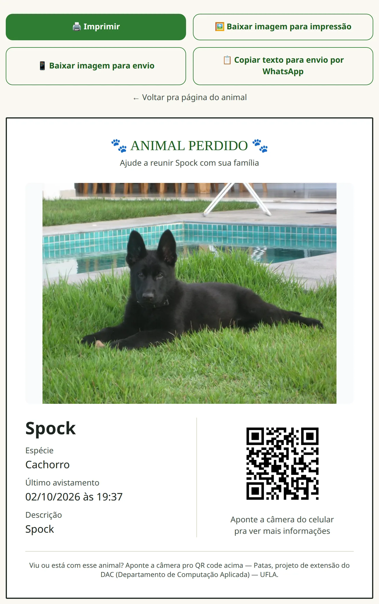
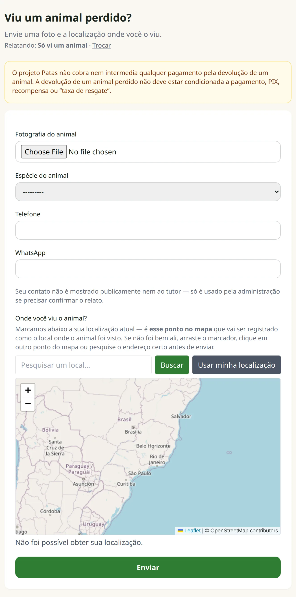
Como funciona
Passe o mouse para pausar · clique numa etapa do diagrama para ver a tela correspondente.
Arquitetura
O Patas é uma aplicação Django sobre PostgreSQL com PostGIS, para consultas geográficas como distância entre avistamentos, e pgvector, para busca por similaridade entre descrições. Fotos ficam em armazenamento compatível com S3 (MinIO, via django-storages); o processamento pesado roda em segundo plano com Celery e Redis, e o celery-beat agenda as varreduras periódicas de correspondências. Login com Google (django-allauth), bot do Telegram com webhook para voluntários que relatam pelo celular, papéis hierárquicos de Nível 0 a 5, trilha de auditoria, pontuação de voluntários e implantação com Docker Compose e integração contínua no GitHub Actions.
O pipeline de IA usa um modelo de visão via LiteLLM — compatível com modelos locais servidos pelo Ollama — para avaliar se a foto é adequada e gerar uma descrição voltada à identificação. Cor e porte são extraídos com vocabulário controlado e um parser de dependência do spaCy em português, que distingue, por exemplo, a cor da pelagem da cor dos olhos. A descrição vira um embedding, e o matching combina similaridade de cosseno, proximidade geográfica, proximidade no tempo e sobreposição de características (Jaccard) num score ponderado, cujo detalhamento é guardado para calibrar os pesos com dados reais. Pessoas validam cada etapa: o Nível 3 revisa as descrições, o Nível 4 confirma o match e verifica a identidade por telefone antes de liberar o contato, e o mapa público mostra só uma área aproximada.
Perguntas, painéis e alertas sobre dados geográficos
Plataforma para consultar dados geográficos sem precisar ser especialista. A equipe técnica prepara as bases de dados e cadastra perguntas prontas; quem usa escolhe os parâmetros e recebe a resposta em mapas, gráficos e tabelas, pode rever consultas anteriores, receber alertas automáticos quando algo merece atenção e explorar painéis interativos. Projetei a arquitetura e implementei boa parte do sistema, com a colaboração de outros desenvolvedores, e lidero tecnicamente sua evolução.
Para a sua startup: mostra a capacidade de levar um sistema do protótipo à produção e mantê-lo evoluindo, atendendo empresas e órgãos públicos diferentes.
Onde foi utilizado
- Instituto Mineiro de Agropecuária (IMA)Em produção
- Ministério Público Federal (MPF)Em nível de protótipo
- Vale S.A.Ferramenta interna para a equipe de pesquisa incluir seus dados, com o nome Plataforma para Gestão Sustentável de Território
- Suzano S.A.Em nível de protótipo, em projeto entre a Zetta, agência de inovação da UFLA, e a empresa
- Registro no INPI — GeoProcessBR512024003312-2 (2024)
- Registro no INPI — projeto SuzanoBR512025006681-3 (2025)
Todos são projetos institucionais da UFLA dos quais participei como professor — não são trabalhos de consultoria.
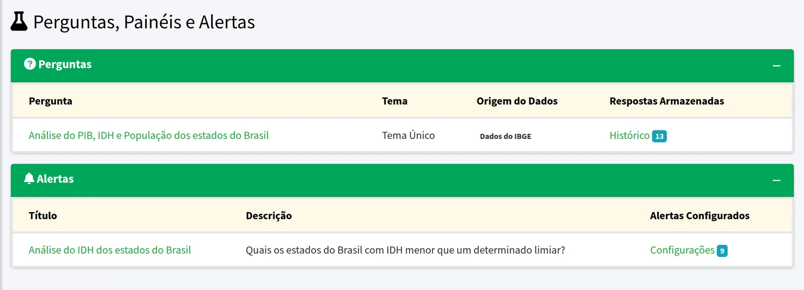
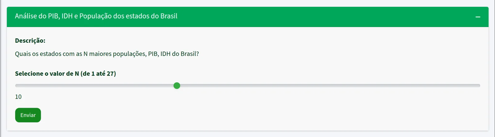
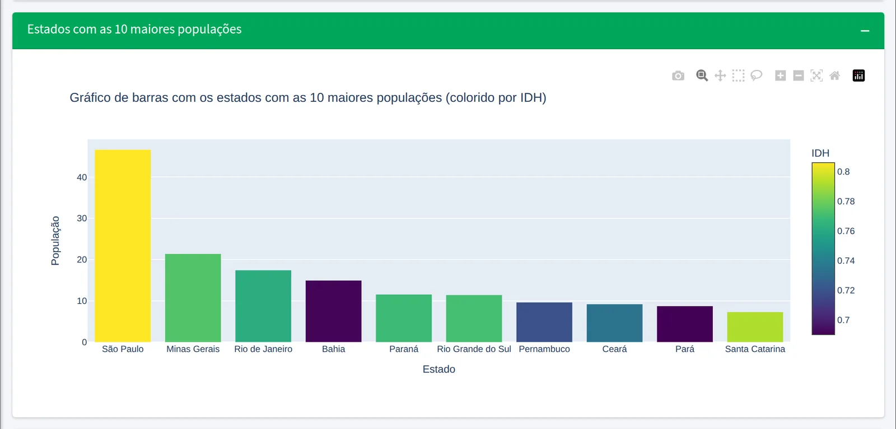
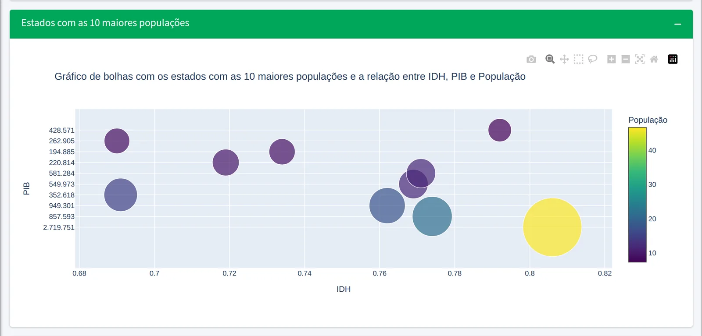
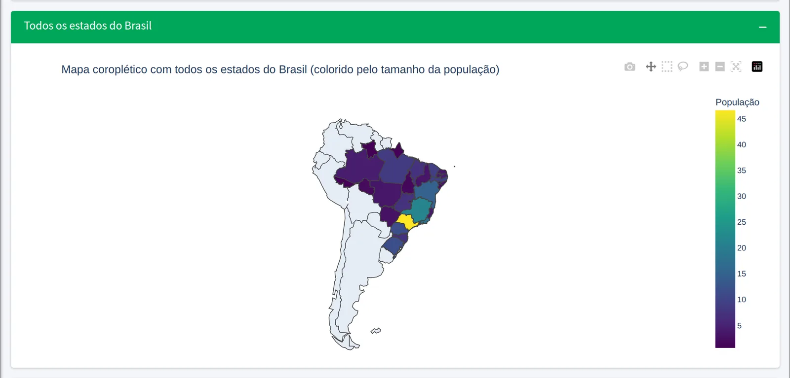
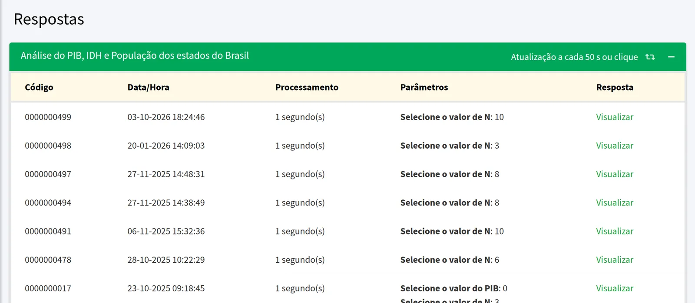
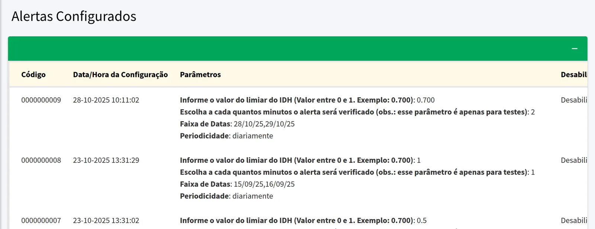
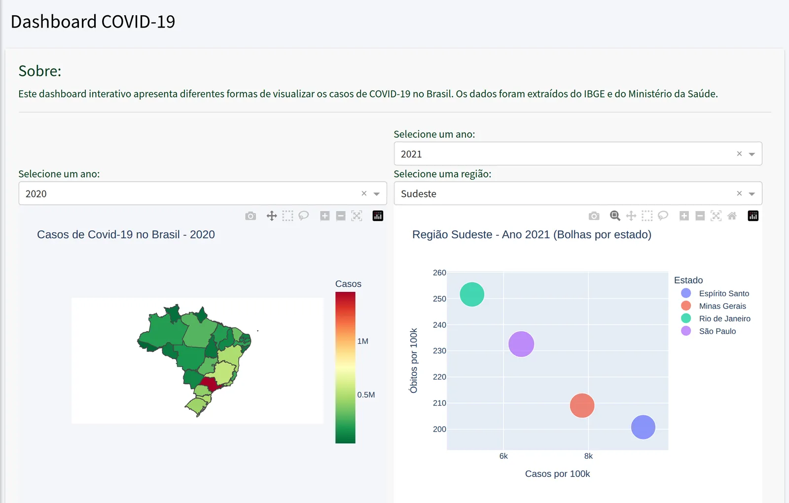
Como funciona
Passe o mouse para pausar · clique numa etapa do diagrama para ver a tela correspondente.
Arquitetura
O GeoProcess é um framework distribuído baseado no conceito de perguntas e respostas, dividido em três módulos desacoplados: o Portal (Django, com front-end em Bootstrap/AdminLTE, Plotly e OpenLayers), o Gateway (FastAPI sobre Uvicorn) e os Consumers, serviços Python que efetivamente respondem às perguntas. Portal e Gateway conversam por API web; Gateway e Consumers trocam mensagens JSON via RabbitMQ (AMQP), em fluxos independentes e assíncronos. Cada consumer se registra no Gateway anunciando seu projeto, suas perguntas e seus parâmetros — novas análises entram no sistema sem alterar o Portal, e várias instâncias do mesmo consumer podem rodar em paralelo, o que garante escalabilidade horizontal.
O Gateway concentra segurança e rastreabilidade: o usuário se autentica por Single Sign-On (OIDC), o Portal repassa o token JWT e o Gateway decide quais projetos e perguntas cada perfil enxerga, registrando toda requisição e resposta no PostgreSQL — daí vem o histórico. Uma biblioteca comum oferece a classe base dos consumers e um contrato de resposta que abstrai mapas, gráficos, tabelas e mensagens; o desenvolvedor escreve só a consulta e a montagem do resultado, enquanto distribuição, formatação e controle de acesso ficam com a plataforma. Alertas são perguntas agendadas que só notificam quando a resposta não é vazia, e um Visual Builder permite prototipar a tela de resposta com o cliente (técnica do Mágico de Oz) e gerar o esqueleto do consumer em Python. Dados espaciais ficam em PostGIS e GeoServer, e a operação é monitorada com Prometheus e Grafana.
Trilhas adaptativas para o ensino de programação
Plataforma de ensino de programação em que cada aluno segue um caminho próprio: textos, vídeos, exercícios e problemas se encadeiam, e o próximo passo depende de como o aluno respondeu. Os exercícios são corrigidos na hora, com retorno imediato, o que permite acompanhar centenas de alunos por período. A plataforma substituiu as aulas teóricas de Fundamentos de Programação das engenharias da UFLA e já atendeu milhares de alunos. Concebi o método e projetei e implementei a plataforma; outros professores produziram os conteúdos. O módulo mais recente, o Atena Tutor, usa inteligência artificial para ensinar o aluno a resolver problemas passo a passo.
Para a sua startup: mostra um produto que mudou a rotina de milhares de usuários e segue ganhando novos módulos, como o tutor com inteligência artificial.
Onde é utilizado
- UFLA — engenhariasFundamentos de Programação I, em uso desde 2022
- ResultadosAprovação próxima de 80% após a adoção do método
- Atena TutorEm versão beta, integrado ao Atena
Projeto institucional da UFLA — não é trabalho de consultoria.
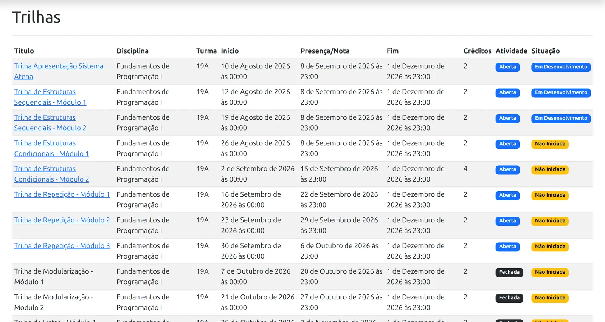
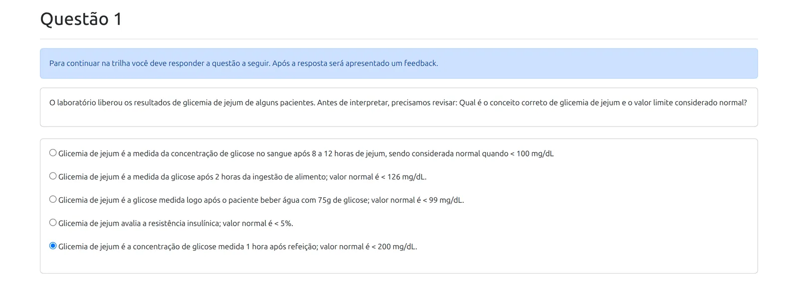
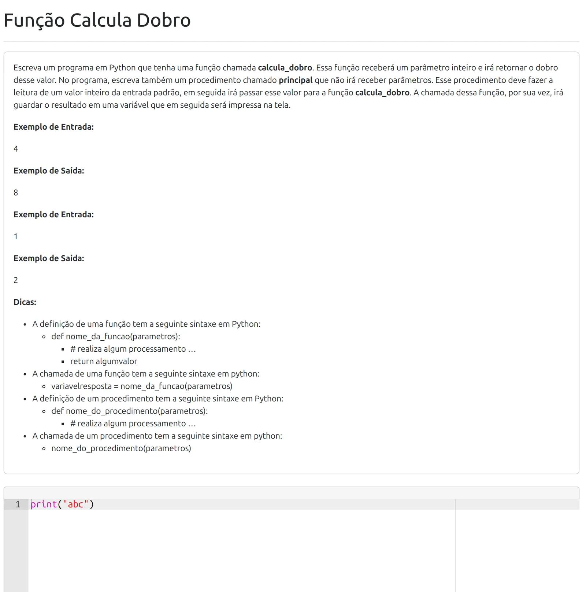
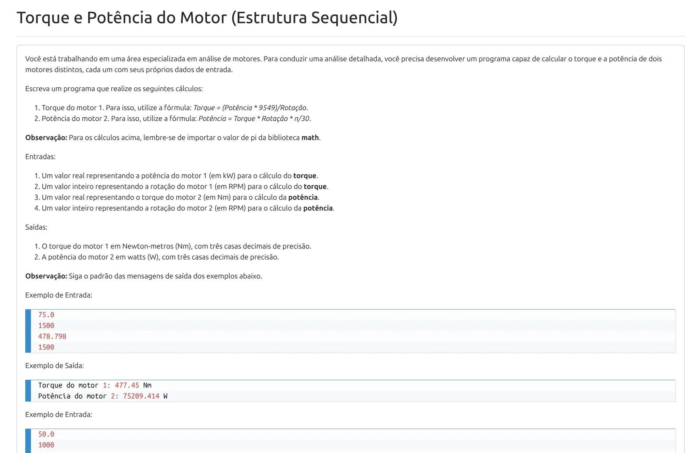
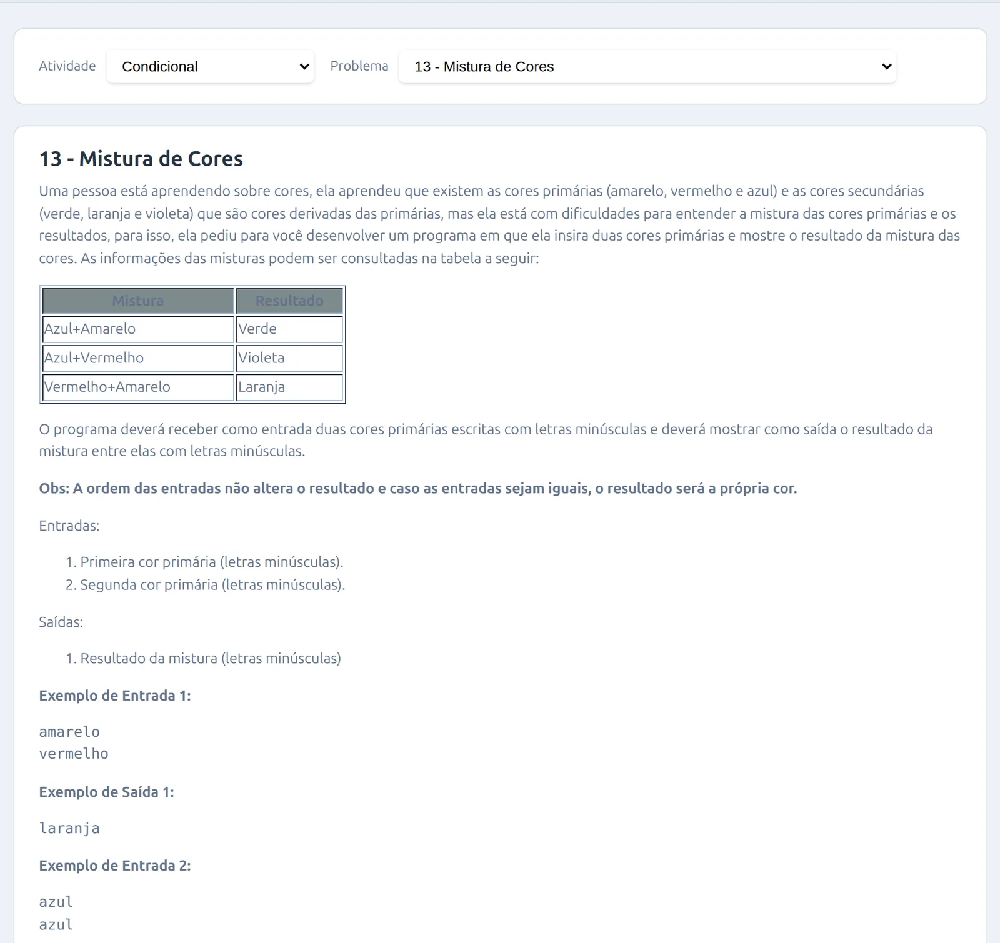
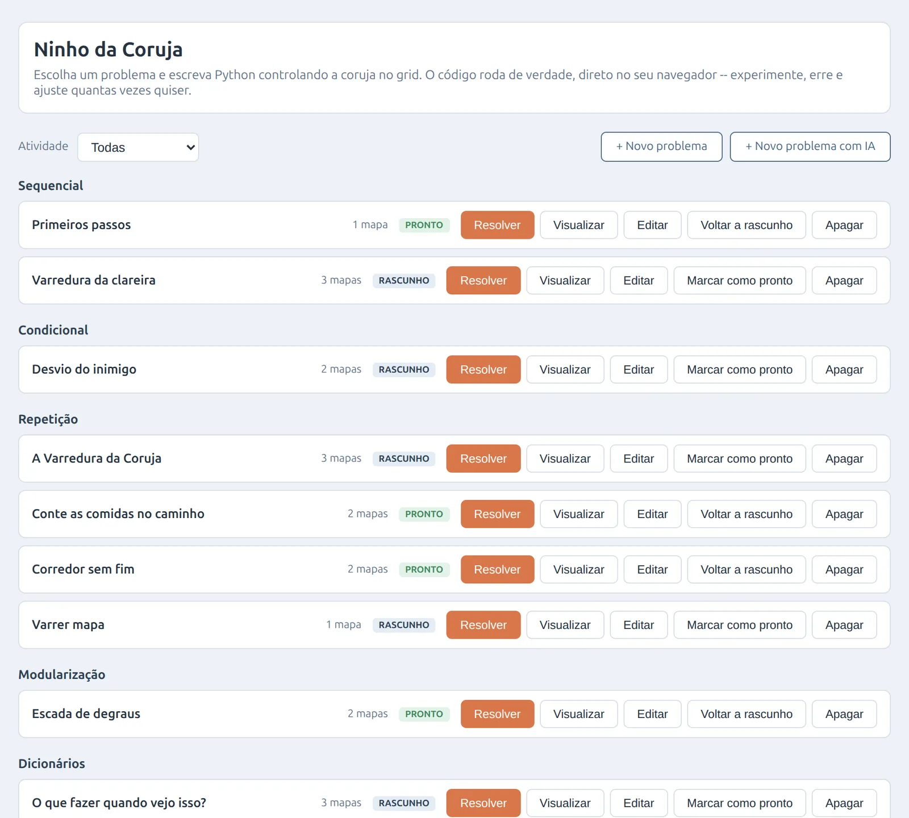
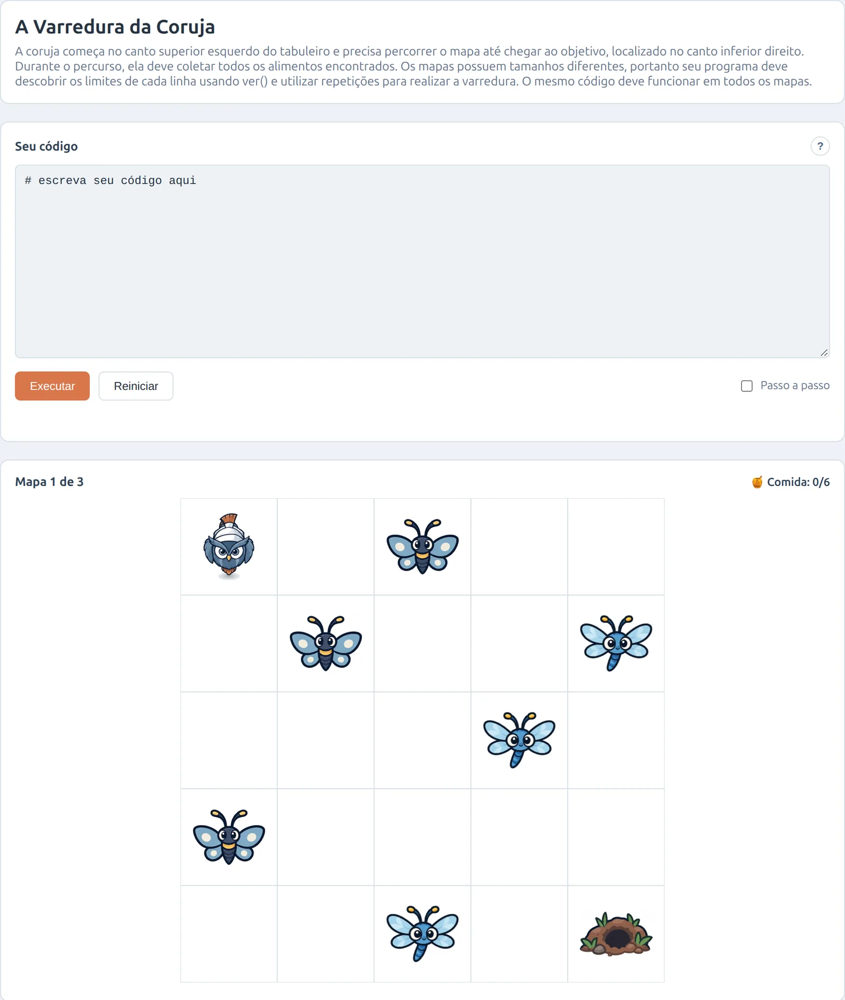
Como funciona
Passe o mouse para pausar · clique numa etapa do diagrama para ver a tela correspondente.
Arquitetura
O Atena é uma aplicação Django com MySQL/MariaDB, servida por Gunicorn atrás do Nginx e autenticada pelo CAS da universidade. O modelo de dados é orientado a objetos de aprendizagem: textos, vídeos, slides, notebooks, mapas de imagem, questões e problemas herdam de um mesmo tipo base, e cada trilha é um grafo em que cada nó aponta para o próximo conforme o resultado da resposta — correta, parcial, incorreta ou o caminho escolhido numa questão. As trilhas podem ser desenhadas num editor visual e são validadas antes da publicação. Os problemas aceitam Python, Java, C e C++ e rodam em três modos: no navegador com Pyodide, em blocos com Blockly ou no servidor, numa sandbox confinada por AppArmor, com pool de execução controlado por locks e limite de tempo.
As atividades avaliativas comparam a saída com os casos de teste — com algoritmos de similaridade como Levenshtein e Smith-Waterman — e analisam a árvore sintática do código para exigir funções e parâmetros; provas podem ser restritas por IP e liberadas por código TOTP. O Atena Tutor é um serviço separado (Flask, SQLAlchemy/Alembic, PostgreSQL, Docker), com login federado por JWT assinado. Um LLM gera soluções de referência que só são aceitas depois de passar nos casos de teste, com nova tentativa a partir do erro detalhado; o fluxograma é derivado do AST, sem IA, e o LLM apenas rotula blocos já delimitados pelo parser — nunca reescreve o código. A checagem de compreensão compara a resposta do aluno por embeddings locais, as dicas são liberadas por tentativa e por tempo, e os painéis analíticos são integrados ao CogniFox.
Protótipos com hardware e software próprios
Projetos de pesquisa em que construímos tanto os dispositivos quanto os sistemas. Mostram que, se a sua ideia depende de sensores, aparelhos conectados ou comunicação sem fio, isso também cabe numa prova de conceito.
Uma casa inteligente que se adapta a quem mora nela
Linha de pesquisa sobre casas inteligentes para pessoas com deficiência e idosos. A mesma casa pode ser controlada de seis formas diferentes — pelo celular com leitor de tela, por blocos que o próprio morador monta, por uma luva com sensores, por gestos diante da câmera, por comandos de voz em português e até pelo pensamento, com um sensor de atividade cerebral —, para que cada pessoa use o jeito que funciona melhor para ela. Os protótipos foram avaliados com usuários reais, incluindo pessoas com deficiência visual e idosos, e geraram artigos em periódicos internacionais e registro de software no INPI. Tudo foi projetado e construído pela nossa equipe — o hardware, com as placas de microcontroladores e sensores instaladas nos aparelhos, a luva e os módulos de comando, e o software, da central da casa aos aplicativos de controle —, numa época em que casas inteligentes ainda não eram produtos prontos para comprar. Projetei a arquitetura e desenvolvi os protótipos, em parceria com o professor André Pimenta Freire, especialista em interação humano-computador.
Resultados
- Artigos internacionaisPersonal and Ubiquitous Computing · Behaviour & Information Technology · Multimedia Tools and Applications
- Estudo com interface cerebralControle da casa por comandos mentais, avaliado com 30 participantes
- Registro no INPIPrograma de computador Casa Assistiva — BR512018000396-6 (2018)
- Laboratório Alcance — UFLAPesquisa com financiamento de agências de fomento, incluindo a FINEP
Projeto de pesquisa da UFLA — não é trabalho de consultoria.
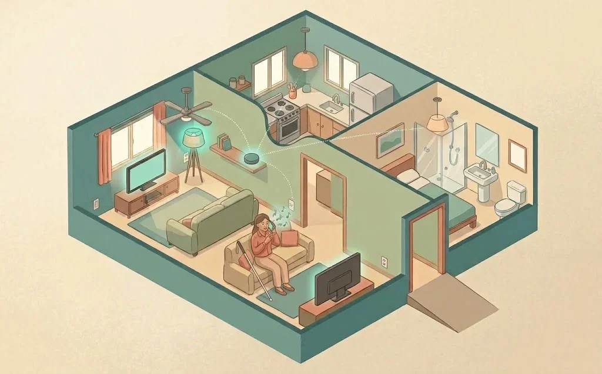
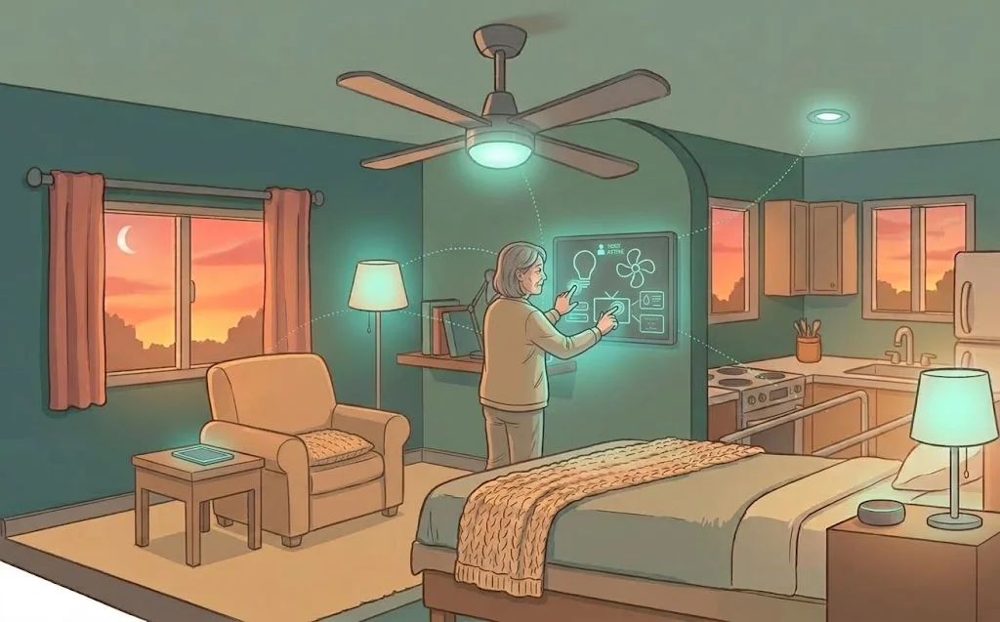
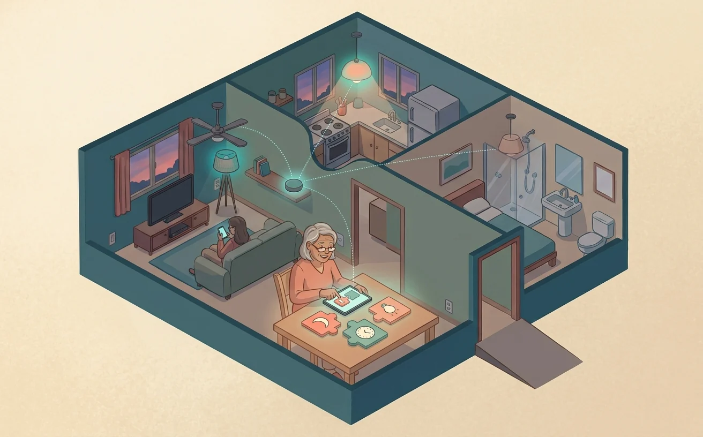
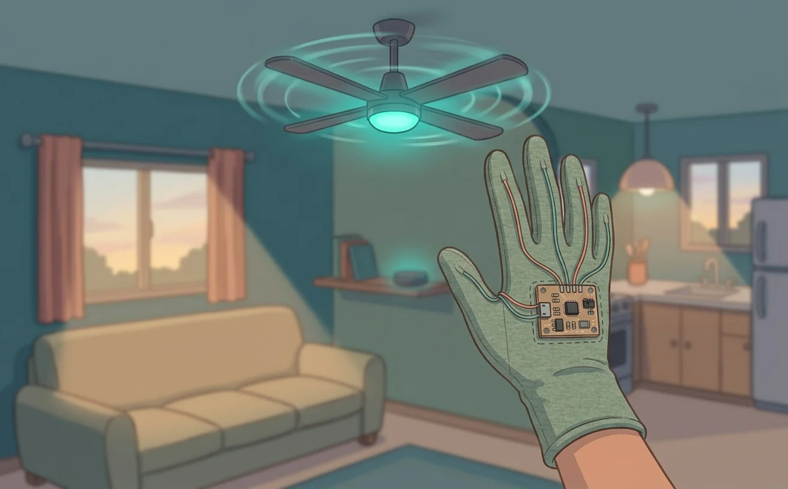
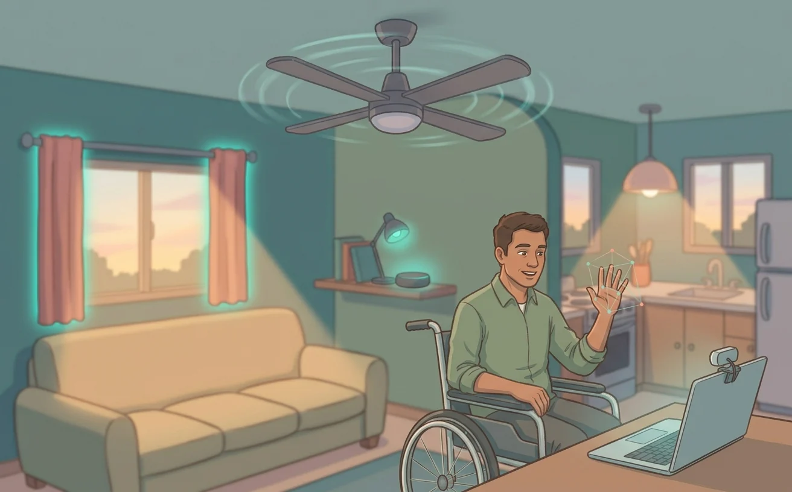
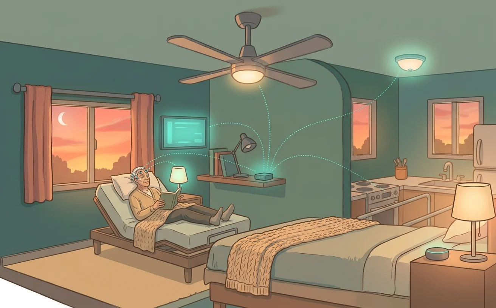
Como funciona
Passe o mouse para pausar · clique numa etapa do diagrama para ver a imagem correspondente.
Arquitetura
Os dispositivos da casa — lâmpadas, tomadas e aparelhos — são acionados por microcontroladores ESP8266 que se comunicam por MQTT com um broker central, um protocolo publish/subscribe leve, adequado a redes domésticas. Todas as interfaces publicam comandos no mesmo padrão de tópicos, então novas formas de interação entram sem mexer nos dispositivos. A primeira versão é uma aplicação web em Java (JSP), com páginas por cômodo pensadas para leitores de tela; a versão mais recente foi reescrita em Python com Django.
A programação pelo usuário final usa o Blockly, com blocos próprios de gatilhos (horário, sensores, estado dos aparelhos) e ações, traduzidos em regras que a central executa. A luva combina um ESP8266 com o acelerômetro e giroscópio MPU-6050 para reconhecer gestos da mão; o controle pela câmera usa TensorFlow.js com transfer learning sobre uma rede pré-treinada, treinada no próprio navegador com poucos exemplos do usuário; e os comandos de voz passam pelo CoGrOO, analisador de português, que extrai a ação e o dispositivo da frase antes de virar uma mensagem MQTT. Para pessoas com limitações motoras severas, um headset de EEG Emotiv EPOC+ (14 canais, via Bluetooth) captura comandos mentais treinados por usuário, que viram ações da casa pelo mesmo barramento MQTT; a usabilidade foi avaliada com 30 participantes, com protocolo de pensar em voz alta e análise de vídeo.
Coleiras inteligentes que reconhecem o comportamento do gado
Prova de conceito de monitoramento de bovinos com coleiras que medem os movimentos do animal o tempo todo. As coleiras conversam entre si e enviam os dados para uma pequena estação no campo; a inteligência artificial aprende a reconhecer o que o animal está fazendo — andando, parado, sentado, levantando ou virando — e um painel mostra isso em tempo real. Mudanças de comportamento costumam ser o primeiro sinal de doença, cio ou estresse, e acompanhar isso de perto num rebanho grande é inviável sem tecnologia. Os testes foram feitos com animais reais — cães, porque com eles era possível pedir cada comportamento durante o treinamento (sentar, deitar, andar, levantar) e registrar exatamente o que o animal estava fazendo, algo impossível de controlar com bois no pasto. Projetamos e construímos tanto o hardware das coleiras quanto o software — do programa que roda em cada coleira ao aplicativo de campo e ao painel.
Situação
- Prova de conceito concluídaColeiras, estação de coleta, aplicativo e painel funcionando de ponta a ponta
- Primeiros resultadosEm testes com cães, cerca de 3 em cada 4 comportamentos reconhecidos corretamente, com uma base ainda pequena de dados
- O que a POC mostrouÉ viável reconhecer o comportamento do gado com coleiras de baixo custo; a precisão cresce com mais dados de campo
Projeto de pesquisa da UFLA — não é trabalho de consultoria.
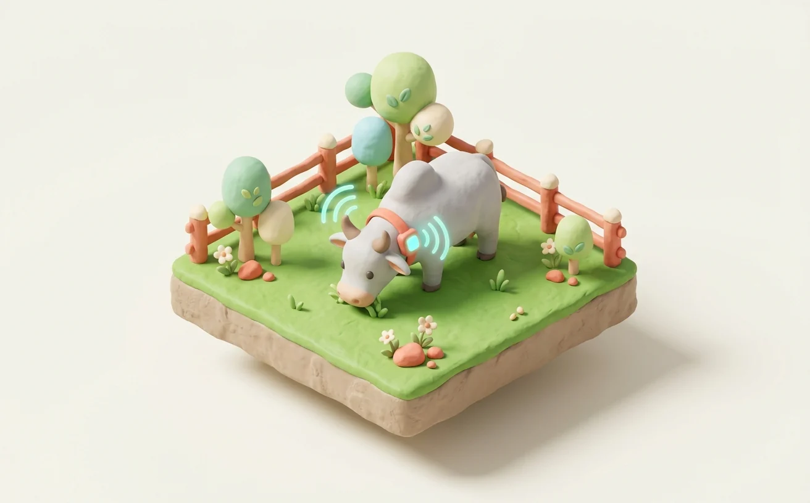
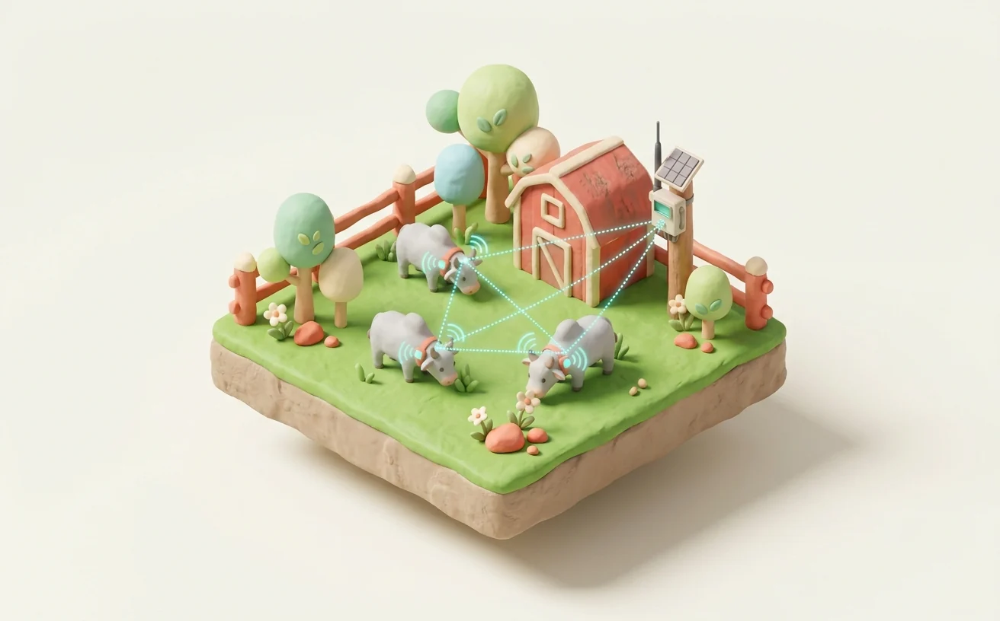
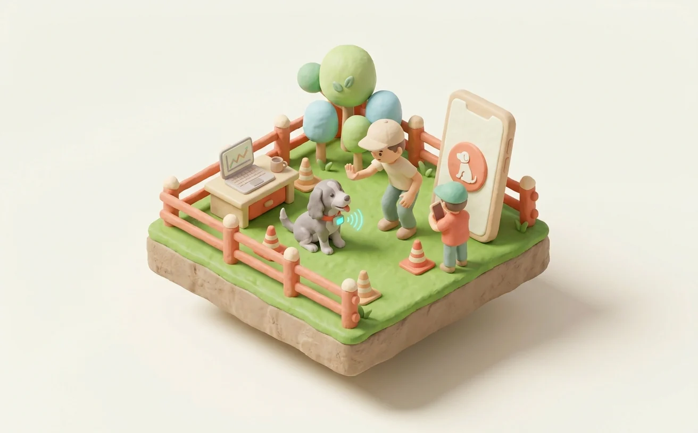
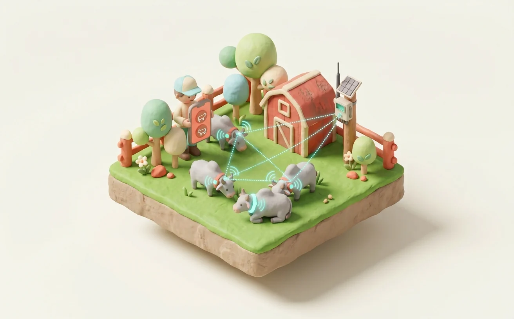
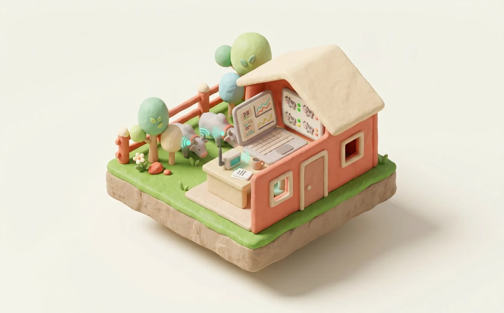
Como funciona
Passe o mouse para pausar · clique numa etapa do diagrama para ver a imagem correspondente.
Arquitetura
Cada coleira tem um microcontrolador ESP8266 com o acelerômetro e giroscópio MPU-6050, que mede ângulos e acelerações em três eixos; um filtro de Kalman combina as duas leituras para estimar a inclinação com menos ruído. As coleiras trocam mensagens pelo ESP-NOW, protocolo ponto a ponto que dispensa roteador Wi-Fi, e um nó coletor repassa os dados por MQTT ou pela serial para uma estação com Raspberry Pi. Também foram testadas a comunicação por Bluetooth e a coleta direto no celular, com um aplicativo em Flutter usado para rotular o comportamento observado em campo.
Na classificação, cada amostra é uma janela com 100 leituras de cada sinal; os atributos são normalizados e reduzidos com PCA e LDA, e foram comparados regressão logística, SVM linear e com kernel RBF, árvore de decisão, Random Forest e KNN, com validação cruzada e busca de hiperparâmetros em pipelines do scikit-learn. Nos testes com cães, os melhores modelos chegaram a cerca de 77% de acerto no conjunto de teste, numa base ainda pequena. Um painel em Streamlit lê os dados em tempo real e ajusta curvas por regressão polinomial para visualizar cada movimento.
Veículos que avisam uns aos outros sobre acidentes, sem internet
Protótipo de comunicação direta entre veículos para espalhar alertas de acidente pela estrada. Cada carro leva um pequeno dispositivo com GPS que conversa com os veículos ao redor, sem depender de internet ou de antena de celular; quando acontece um acidente, o alerta é repassado de carro em carro até quem vem atrás, com regras que evitam congestionar a comunicação. O sistema foi testado com carros de verdade nas ruas de Lavras e em simulações de tráfego com muitos veículos. Projetamos e construímos o hardware e o software — do dispositivo instalado nos carros às ferramentas de análise —, em parceria com o professor Luiz Henrique Andrade Correia, especialista em redes.
Resultados
- Registro no INPIPrograma de computador Redes Veiculares — BR512019002553-9 (2019)
- Testes de campoVeículos reais nas ruas de Lavras, em 2019
Projeto de pesquisa da UFLA — não é trabalho de consultoria.
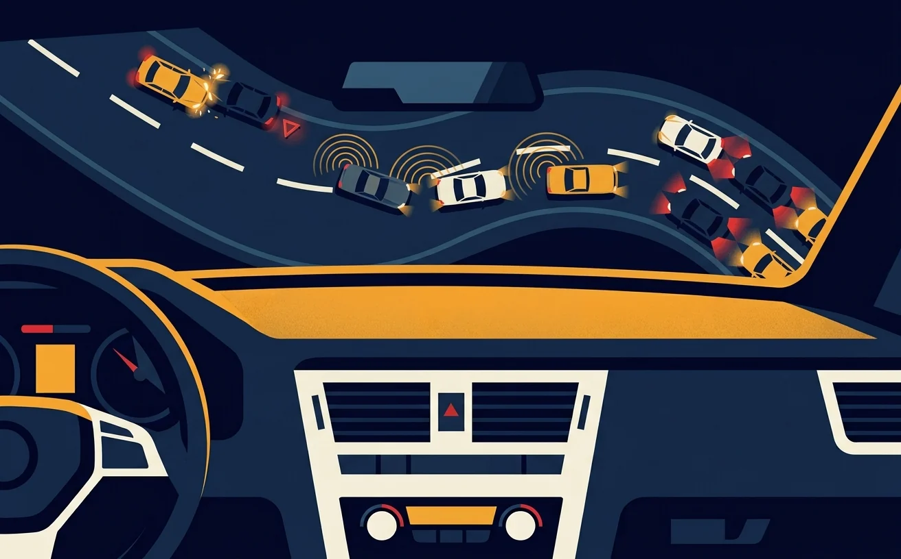
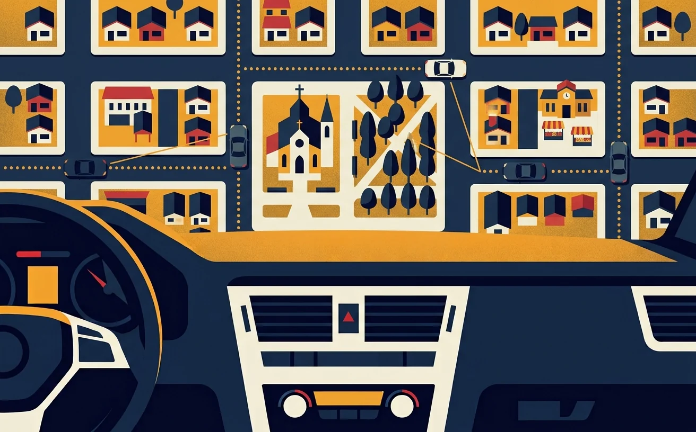
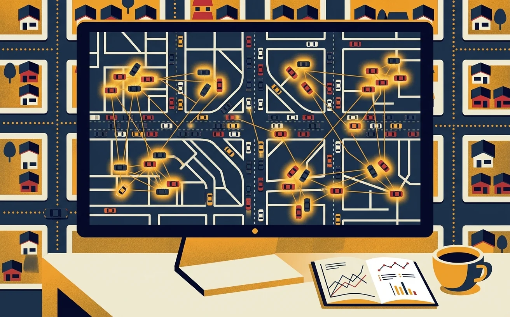
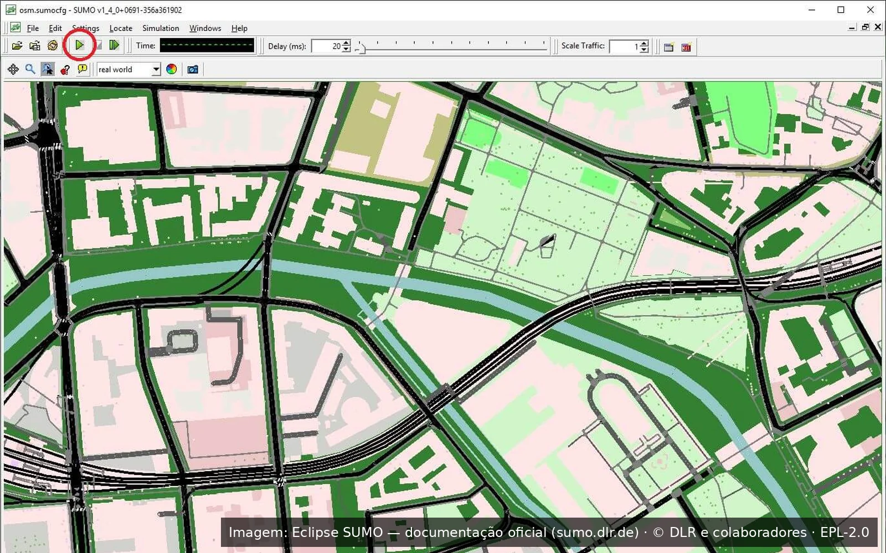
Como funciona
Passe o mouse para pausar · clique numa etapa do diagrama para ver a imagem correspondente.
Arquitetura
Em cada veículo, um celular Android fornece a posição de GPS a um nó com microcontrolador ESP8266, que se comunica com os demais pelo ESP-NOW, protocolo ponto a ponto de baixa latência que dispensa roteador. Os nós trocam periodicamente posição, velocidade e um índice de confiança sobre cada vizinho, e retransmitem mensagens com controle de número de saltos e de reenvios, com regras para disseminar alertas de acidente sem inundar a rede. O firmware também implementa um modo que segue o padrão europeu ETSI para mensagens veiculares cooperativas, usado como referência de comparação.
Uma aplicação desktop em Java recebe os dados dos nós por socket, mostra os veículos no mapa, gera relatórios e pode emular nós, e se integra ao simulador de tráfego SUMO para testar o protocolo com fluxos de veículos em rotas e velocidades de 20 a 60 km/h. Nos testes de campo, cada nó registra em JSON as posições próprias e as recebidas dos vizinhos; scripts em Python comparam o que cada carro sabia sobre os outros com a posição real, calculam erro e confiança por par de nós e exportam GeoJSON e KML para visualização. Há ainda aplicativos Android e Flutter para acompanhar os nós no celular.
Quer colocar a sua ideia à prova?
Me conte em poucas linhas o que você quer testar, validar ou apresentar — e vemos juntos o melhor caminho.